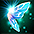
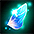
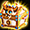

精鋭討伐
ガレリオン野営地(ヤティカヌエリア)より入場可能な高難易度コンテンツ。ボスを討伐することで週に1度1000UMU(武器/防具)や様々なアイテムを入手可能。

| 制限Lv | 1250～9999 1～8人 週1で入場可能(月曜0:00リセット) 制限時間30分 |
|---|---|
| 入口 | ガレリオン野営地（25,156） 難易度ごとに妖精の翼のカケラなどの特殊な入場券が必要。 ・ヤティカヌの深層部[初級]：妖精の翼のカケラ×1枚 ・ヤティカヌの深層部[中級]：妖精の翼×1枚 |
| 報酬 |
※経験値はスフィア・パワキ無し時の数値 775UMU/1000UMU(職鎧以外)/1100DXUをランダムで1つ ※1000UMUは概ね3%程度の確率で入手可能 [初級] 10億EXP, トレジャーボックス[精鋭討伐] [中級] 20億EXP, トレジャーボックス[精鋭討伐] [上級] 30億EXP, トレジャーボックス[精鋭討伐] ※中級、上級からは[1250ULT選択BOX]が追加でドロップする可能性あり ※限界突破５のひび割れた邪念を100%入手可能 |
| フィールド特殊効果 | ステータス低下35％ 属性抵抗上限50％ マップ表示不可 |
＜入場券＞
ヤティカヌフィールドに入場さえできれば挑戦は可能。(2022/9現在、前提クエストを全て終える必要はない)
関連：ヤティカヌクエスト
入場券を一定確率でドロップするREDSTONEのオーラはヤティカヌマップでのみ出現します。
※ドロップ率は8~10%程度
※イベント等でオーラの見た目が変わる場合、イベント用の見た目が反映されます。

※インベントリ内の妖精の翼のカケラアイコンを右クリックすることで、妖精の翼のカケラ60枚を妖精の翼1枚に変換できます。
また、ガレリオン野営地のNPC「妖精石鑑別師(座標:36,160)」からも交換できます。
| 難易度 | 必要入場券 |
|---|---|
| 初級 | 妖精の翼のカケラ1個  |
| 中級 | 妖精の翼1個  |
| 上級 | 絢爛な妖精の翼1個 |
| 超級 | 絢爛な妖精の翼1個 |
【交換レートまとめ】
| 入場券 | 数 | 交換可能入場券数 |
|---|---|---|
| 妖精の翼のカケラ | 60 | 妖精の翼1個 |
| 妖精の翼 | 6 | 絢爛な妖精の翼1個 |
＜手順＞
難易度によって違うのは敵の強さのみ。
クリアするまで週に何度でもチャレンジ可能。
※復活回数はPTで8回まで※
※アイテムでの復活は完全復活巻物、安息草でのみ可能。
BISのリザレクション・ネクロの蘇生術は1プレイヤー当たり1度のみ使用可能。
（ペット復活は復活回数制限には含まれません。)
インベントリ内に「完全復活巻物」「安息草」の両方を所持している場合、「安息草」を優先的に使用。
復活OPを使っての復活も不可。
[1段階目]
4隅のモンスターを全て倒す。初級での強さは夜影～暁程度。
リーダーが中央のオブジェクトをクリック
[2段階目]
タビアクート1段階目
初級でHP5000万程度
物理攻撃を中心に行ってくる。
地面から多数のタケノコ？が発生。1~3発で1サイクル。
触れると物理ダメージ（大）。

防御50万程度で被物理ダメ5万程度まで抑えられるのでそれで耐えつつ倒す。
ソウルガード・サンクチュアリは有効。
被ダメ減少OPも有効。
[3段階目]
タビアクート2段階目
初級でHP5000万程度
水属性の魔法攻撃を中心に行ってくる。
全吸収OPが無効なので[剛断の]や[堅実な]OPで魔法抵抗の最大値を90%までできるだけ近づけるのが◎

加えてHPもある程度(10万～)ないと泡のダメージで溶ける可能性がある。
泡は5wayで出現地点でさらに大きなダメージ発生。
他にも周囲への攻撃（ワイルドスタンプ）や前方への大ダメージもある。
BISのミラータワーでダメージを軽減できる。
※注意※ 2022/9現在、3段階目突入時に非常に高確率で強制終了します。
そのため入場前支援は剝がされる可能性が高く、WinXP等の古いOSだと攻略が難しいです。
CPU等が一定スペックを超えると強制落ちの確率がかなり低減されますが境界不明。
(IntelのCorei7 9000↑だと落ちにくい？)
加えて全落ちするとPTが解散され、エリア内でPTを組めないのでソウルガードが効かなくなります。
[クリア時]
入場券を１つ消費して報酬を獲得。（フィールド内で破壊しないよう注意）クリア時に生存していないと経験値は入らないので注意。
報酬のユニークアイテムとボックスは生死を問わずプレイヤー単位で獲得可能。
クリア時にデスペナ無しで全プレイヤー自動的に復活できます。(通常はデスペナあり)
終了後のカウントダウンは60秒。
トレジャーボックス[精鋭討伐]
※多くのアイテムは取引可能。
|
|
|
|---|---|
|
|
|
|
|
|
|
|
|
|
|
|
|
|
|
|
|
|
|
|
|
|
|
|
|
|
|
|
|
|
|
|
|
|
|
|
|
|
|
|
|
|
タビアクートのカケラ
絢爛なオプション魔法のお守り箱アイテムは月に一度キャラクター単位で購入制限があり、毎月1日に購入制限が初期化されます。| 精鋭討伐ショップ一覧 | |
|---|---|
| アイテム名 | 必要品目数 |
| 古代森コインx5 | 1 |
| 妖精の翼のカケラ | 1 |
| 華麗なるセットOP魔法のお守り箱 | 2 |
| 絢爛なセットOP魔法のお守り箱 | 8 |